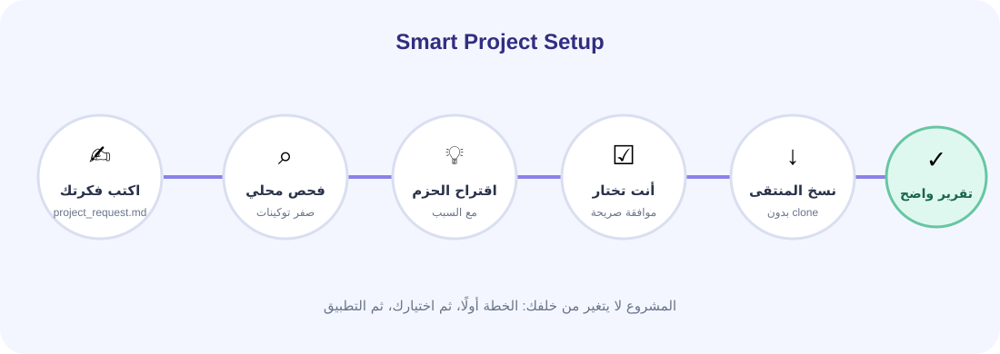

اضغط Guided Setup
سيظهر ملف project_request.md.
اختيار ذكي • موافقة صريحة • ملفات منتقاة
لا يحمل المستودعات كاملة داخل كل مشروع. يقرأ وصف مشروعك وملفاته، يختار الحزم، ثم ينسخ الملفات المفيدة الموجودة في Upstream Vault ويشغّل النسخة المكيّفة داخل INI Brain.

سيظهر ملف project_request.md.
# مشروعي
أريد متجر React بواجهة عربية، API في Node.js، قاعدة بيانات، وأستخدم Codex وClaude.لا تحتاج لغة هندسية. اكتب ما تريد ومن سيستخدمه.
يفحص الوصف محليًا ويكتشف: واجهة، API، ومجموعة وكلاء. لا استدعاء AI ولا تكلفة توكينات.
المقترح محدد مسبقًا، والاختياري غير محدد. عدّل الاختيار كما تريد.
بعد التأكيد يكتب تقريرًا في .brain/smart-setup.json بكل ما أُضيف.
| الحزمة | متى تُقترح؟ | المصادر | الميزة التي تعمل فعليًا |
|---|---|---|---|
| أساس التخطيط والعمل | دائمًا، وبالأخص المشروع الجديد | Spec-Kit، Superpowers، gstack | Spec/Plan/Tasks + ست مهارات هندسية مضغوطة. |
| توفير التوكينات المتوازن | دائمًا | Ponytail، Caveman، Claude Token Efficient | Ponytail Lite + Caveman Lite ومرايا للوكلاء المكتشفين. |
| جودة الواجهة | React/HTML/CSS/Vue/Svelte أو وصف واجهة | Guard Skills، Impeccable | Clean Code + Test + Frontend Design Guards. |
| فهم الكود الكبير | 150 ملفًا فأكثر أو ثلاث لغات فأكثر | Graphify، codebase-memory-mcp | Knowledge Graph داخلي، مع مرجع المحرك المتقدم دون تثبيته تلقائيًا. |
| الذاكرة والسياق | مشروع قائم أو 20 ملفًا فأكثر | AgentMemory inspiration | Remember/Recall/Handoff تستخدم أدوات ذاكرة INI Brain المحلية. |
| العمل مع عدة وكلاء | عند اكتشاف وكيلين أو ذكرهما في الوصف | Delegate Skills | مهارة تفويض محدودة النطاق مع مراجعة واختبارات. |
لا يحتاج إنترنت. ينسخ snapshots المنتقاة المعبأة داخل الإضافة، ثم يفعّل كود INI Brain المحلي.
عند ضغطك فقط، يطلب metadata صغيرة من GitHub. Apply Upstream ينزّل الملفات المسجلة للمصدر، لا المستودع كاملًا.
codebase-memory-mcp برنامج اختياري؛ لا يثبته Smart Setup. ثبّته صراحة عبر -InstallCodeIntel إذا أردت المحرك المتقدم.استخدم ini_brain_smart_setup_plan واعرض لي الخطة بالعربية فقط.
لا تطبق أي حزمة بعد.بعد أن توافق، قل مثلًا:
طبق ini_brain_smart_setup_apply بالحزم التالية فقط:
workflow-core, token-savings, frontend-quality